Cosa sono i SID
What are SIDs
I Sudden Ionospheric Disturbances (SID) sono perturbazioni improvvise della ionosfera terrestre causate dall'intensa radiazione ultravioletta e X emessa durante i brillamenti solari. Durante un brillamento, questa radiazione ionizza ulteriormente lo strato D della ionosfera, situato tra 60 e 90 km di quota, alterando le condizioni di propagazione delle onde radio a bassissima frequenza (VLF).
Le stazioni navali militari trasmettono continuamente segnali VLF per comunicare con i sottomarini. Questi segnali si propagano nella guida d'onda formata dalla superficie terrestre e dalla ionosfera: monitorando la variazione di ampiezza e fase di questi segnali è possibile rilevare i SID e quindi indirettamente i brillamenti solari.
La stazione GAESID monitora il trasmettitore navale militare NSY, situato a Niscemi in Sicilia, che trasmette a 45,9 kHz. Il percorso Torino–Niscemi di circa 1000 km elimina praticamente il contributo dell'onda di terra. Il segnale ricevuto è quasi esclusivamente onda di cielo, il che rende il comportamento del segnale stabile e prevedibile, con i SID proporzionali all'intensità del flare che li ha generati.
Sudden Ionospheric Disturbances (SIDs) are sudden disturbances of the Earth's ionosphere caused by the intense ultraviolet and X-ray radiation emitted during solar flares. During a flare, this radiation further ionises the D layer of the ionosphere, located between 60 and 90 km altitude, altering the propagation conditions of very low frequency (VLF) radio waves.
Military naval stations continuously transmit VLF signals to communicate with submarines. These signals propagate in the waveguide formed by the Earth's surface and the ionosphere: by monitoring the amplitude and phase variation of these signals it is possible to detect SIDs and therefore indirectly solar flares.
The GAESID station monitors the military naval transmitter NSY, located in Niscemi, Sicily, transmitting at 45.9 kHz. The Turin–Niscemi path of approximately 1000 km virtually eliminates the ground wave contribution. The received signal is almost exclusively sky wave, making signal behaviour stable and predictable, with SIDs proportional to the intensity of the generating flare.
Strumentazione utilizzata
Equipment used
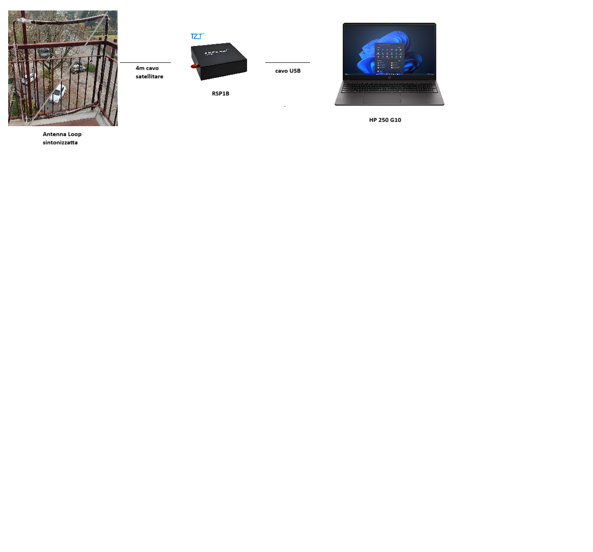
Schema della stazione GAESID: antenna loop sintonizzata collegata tramite cavo satellitare da 4m al ricevitore RSP1B, connesso via USB al laptop HP 250 G10.
GAESID station diagram: tuned loop antenna connected via 4m satellite cable to the RSP1B receiver, connected via USB to the HP 250 G10 laptop.
Loop ad aria quadrato da 1 metro di lato con 30 spire principali e 4 spire di accoppiamento. Sintonizzata sul segnale NSY con condensatori NP0 5% ceramici.
Air-core square loop 1 meter per side with 30 main turns and 4 coupling turns. Tuned to the NSY signal with NP0 5% ceramic capacitors.
Ricevitore SDR a 14 bit con copertura da 1 kHz a 2 GHz. Utilizzato in modalità Low-IF con frequenza di campionamento 62,5 kHz centrata a 45,9 kHz.
14-bit SDR receiver covering 1 kHz to 2 GHz. Used in Low-IF mode with 62.5 kHz sample rate centred at 45.9 kHz.
Laptop con processore Intel Core i5-1334U, 16 GB RAM, Windows 11 Pro. Scelto per il basso livello di rumore elettromagnetico rispetto alla macchina precedente.
Laptop with Intel Core i5-1334U processor, 16 GB RAM, Windows 11 Pro. Chosen for its low electromagnetic noise level compared to the previous machine.
Specifiche tecniche antenna
Antenna technical specifications
| Tipo | Loop ad aria quadrato, costruzione artigianale |
| Lato | 1 metro |
| Numero spire | 30 principali + 4 di accoppiamento |
| Posizione | Balcone esposto a sud, Torino |
| Prelievo segnale | 4 spire di accoppiamento dedicate |
| Sintonia | Condensatori NP0 5% ceramici |
| Type | Air-core square loop, handmade |
| Side | 1 meter |
| Number of turns | 30 main + 4 coupling |
| Position | South-facing balcony, Turin |
| Signal tap | 4 dedicated coupling turns |
| Tuning | NP0 5% ceramic capacitors |
Tracker Multi-PLL e pipeline di analisi
Multi-PLL Tracker and Analysis Pipeline
Il cuore della stazione GAESID è il tracker Multi-PLL, che sostituisce completamente i vecchi software SDR generici per l'acquisizione continua del segnale VLF, producendo file CSV con telemetria diagnostica molto più ricca. Attorno al tracker è cresciuta una pipeline di analisi offline che classifica gli eventi, stima i falsi allarmi, confronta configurazioni diverse e prepara i dati per il Blind Test di Dicembre 2026.
Il progetto è in fase di congelamento: alcune parti sono già Frozen (V1, Sanity Check PLL), altre sono in validazione (V2, pipeline analisi_doppler2.py).
The heart of the GAESID station is the Multi-PLL tracker, which completely replaces old generic SDR software for continuous VLF signal acquisition, producing CSV files with much richer diagnostic telemetry. Around the tracker, an offline analysis pipeline has grown to classify events, estimate false alarms, compare different configurations and prepare data for the December 2026 Blind Test.
The project is in a freezing phase: some parts are already Frozen (V1, Sanity Check PLL), others are under validation (V2, analisi_doppler2.py pipeline).
Il Tracker Multi-PLL v5.2
The Multi-PLL Tracker v5.2
Il tracker Multi-PLL v5.2 (sid_tracker_duale.py) fa girare in parallelo cinque configurazioni (V1, V2, BW02, BW01, PESATO) sullo stesso flusso IQ, scrivendo i risultati in file CSV separati per consentire un confronto rigoroso. La configurazione V2 scrive il file standard GAESID_NSY_*.csv (9 colonne con Corr_Mag e Phase_Resid_Deg); la V1 scrive GAESID_NSY_V1_*.csv (7 colonne) come controllo di non-regressione.
Caratteristiche principali:
• Buffer circolare IQ da 15 minuti (~36 MB) con salvataggio manuale (tasto S), trigger automatico (T) e auto-baseline (L, 4 ore = 16 file da 15 min).
• Logging diagnostico su file in tracker_YYYY-MM-DD.log (heartbeat ogni 60 s, cattura di eccezioni e traceback) — patch del 14/11/2026, non-DSP.
• Macchina a stati basata su SNR (soglia 4.8 dB, debounce 600 s, override di potenza a −15 dB) con stimatore di rumore in banda di guardia (550–1500 Hz) indipendente dal segnale.
• Gain IF: GAIN_IF_DB = 35 (API, equivale a SDRuno IF ≈ 45 dB) — compromesso ottimale tra SNR massimo (+18.65 dB) e distanza dal clipping ADC.
Tasti GUI: G=FFT, Q=esci, A/B=zoom FFT, Z=zoom Y, M=FFT normale/squadrata, S/T/L=salvataggio IQ manuale/trigger/baseline.
The Multi-PLL tracker v5.2 (sid_tracker_duale.py) runs five configurations (V1, V2, BW02, BW01, PESATO) in parallel on the same IQ stream, writing results to separate CSV files for rigorous comparison. V2 writes the standard GAESID_NSY_*.csv file (9 columns with Corr_Mag and Phase_Resid_Deg); V1 writes GAESID_NSY_V1_*.csv (7 columns) as a non-regression control.
Main features:
• 15-minute circular IQ buffer (~36 MB) with manual save (key S), automatic trigger (T) and auto-baseline (L, 4 hours = 16 files of 15 min).
• Diagnostic file logging to tracker_YYYY-MM-DD.log (heartbeat every 60 s, exception capture with traceback) — patch of 14/11/2026, non-DSP.
• State machine based on SNR (threshold 4.8 dB, debounce 600 s, power override at −15 dB) with a guard-band noise estimator (550–1500 Hz) independent of the signal.
• IF gain: GAIN_IF_DB = 35 (API, equivalent to SDRuno IF ≈ 45 dB) — optimal compromise between maximum SNR (+18.65 dB) and ADC clipping margin.
GUI keys: G=FFT, Q=quit, A/B=FFT zoom, Z=Y zoom, M=normal/squared FFT, S/T/L=manual/trigger/baseline IQ save.
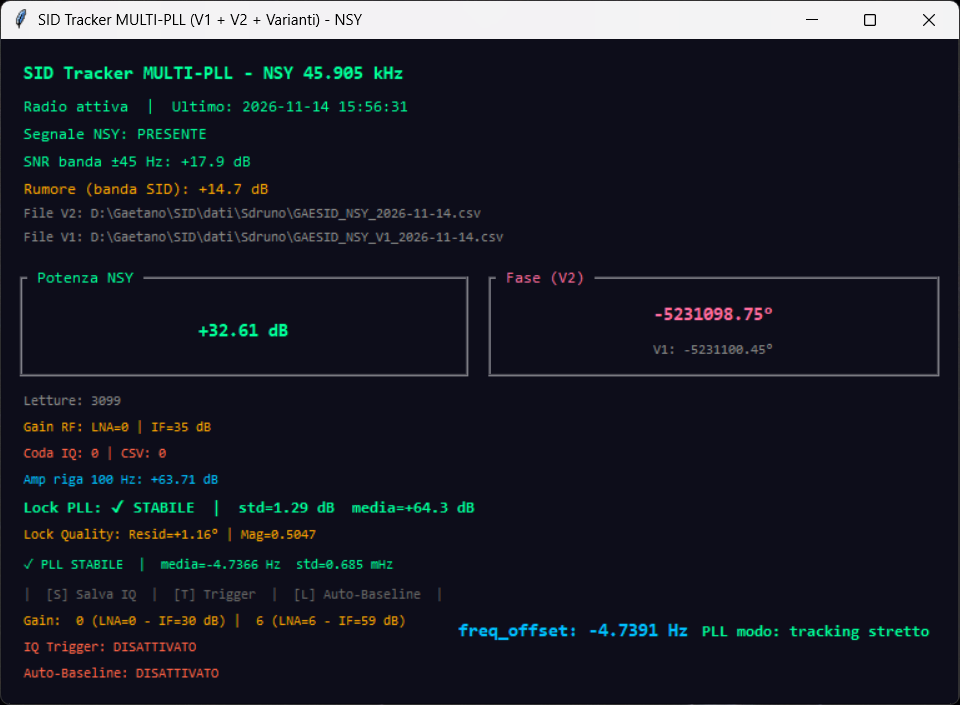
Interfaccia grafica del Tracker Multi-PLL v5.2 in esecuzione. In alto sono visibili lo stato del segnale (PRESENTE), i file CSV generati (V1 e V2) e i valori di Potenza e Fase. In basso, la telemetria diagnostica aggiornata in tempo reale: stato del lock, Lock Quality (Corr_Mag), offset di frequenza e stato dell'IQ trigger.
Multi-PLL Tracker v5.2 graphical interface running. The top shows the signal state (PRESENT), the generated CSV files (V1 and V2), and the Power and Phase values. The bottom displays real-time diagnostic telemetry: lock state, Lock Quality (Corr_Mag), frequency offset, and IQ trigger state.
V1 e V2: due tracker complementari
V1 and V2: two complementary trackers
V1 (sid_tracker_final_SquaringPLL5.py) è il riferimento congelato: semplice, stabile, senza telemetria diagnostica, resta in esecuzione in parallelo come controllo di non-regressione.
V2 (GAESID_NSY) è il tracker ufficiale per il Blind Test di Dicembre. Aggiunge due colonne diagnostiche (Corr_Mag e Phase_Resid_Deg) e ha fedeltà superiore ai transienti SFD (Matched Filter). Le due versioni sono equivalenti nella banda lenta (ADEV 0.0705 vs 0.0707 mHz, correlazione +0.865 sul segnale filtrato), ma V2 paga un costo dichiarato di 3.2 eventi/h da vagliare con Sanity Check e controllo X-ray.
V1 (sid_tracker_final_SquaringPLL5.py) is the frozen reference: simple, stable, without diagnostic telemetry, kept running in parallel as a non-regression control.
V2 (GAESID_NSY) is the official tracker for the December Blind Test. It adds two diagnostic columns (Corr_Mag and Phase_Resid_Deg) and has superior SFD transient fidelity (Matched Filter). The two versions are equivalent in the slow band (ADEV 0.0705 vs 0.0707 mHz, correlation +0.865 on the filtered signal), but V2 has a declared cost of 3.2 events/h to be screened with Sanity Check and X-ray validation.
Classificatore multi-canale (v2.0)
Multi-channel classifier (v2.0)
A. Canale Potenza (SFE/SFA) — bipolare, soglia dinamica basata sulla MAD del rumore pre-evento. Soglia minima SFE = 1.5 dB, SFA = 2.0 dB. Rivelatore primario per gli SFE.
B. Canale Doppler (RMS) — SNR locale (std quieta), soglia minima 2.5. Rileva i transienti SFD con allineamento al gradiente X-ray.
C. Canale Fase Integrata — massima sensibilità, ma SNR matematicamente inaffidabile per la classificazione primaria: usato come conferma diagnostica con metrica Δφ/σ (soglia provvisoria SNR_FASE_INT_MIN = 5.0, in attesa di calibrazione placebo).
A. Power channel (SFE/SFA) — bipolar, dynamic threshold based on pre-event noise MAD. Minimum SFE = 1.5 dB, SFA = 2.0 dB. Primary detector for SFEs.
B. Doppler channel (RMS) — local SNR (quiet std), minimum threshold 2.5. Detects SFD transients aligned with the X-ray gradient.
C. Integrated Phase channel — maximum sensitivity, but mathematically unreliable SNR for primary classification: used as diagnostic confirmation with the Δφ/σ metric (provisional threshold SNR_FASE_INT_MIN = 5.0, pending placebo calibration).
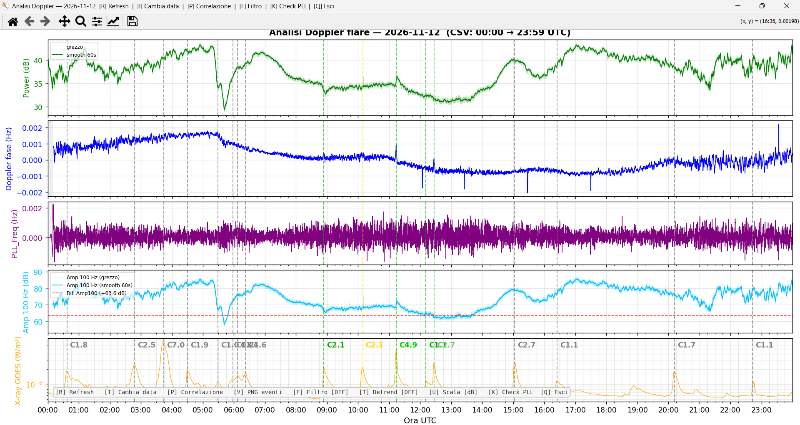
Interfaccia principale di analisi_doppler2.py per il 12 Novembre 2026. I pannelli mostrano dall'alto: Potenza con relativo smooth a 60s, Fase Doppler, frequenza del PLL, Ampiezza a 100 Hz (con linea di riferimento del lock) e il flusso X-ray GOES con le etichette delle classi dei flare.
Main interface of analisi_doppler2.py for 12 November 2026. Panels show (from top to bottom): Power with 60s smoothing, Doppler Phase, PLL frequency, 100 Hz Amplitude (with lock reference line), and the GOES X-ray flux with flare class labels.
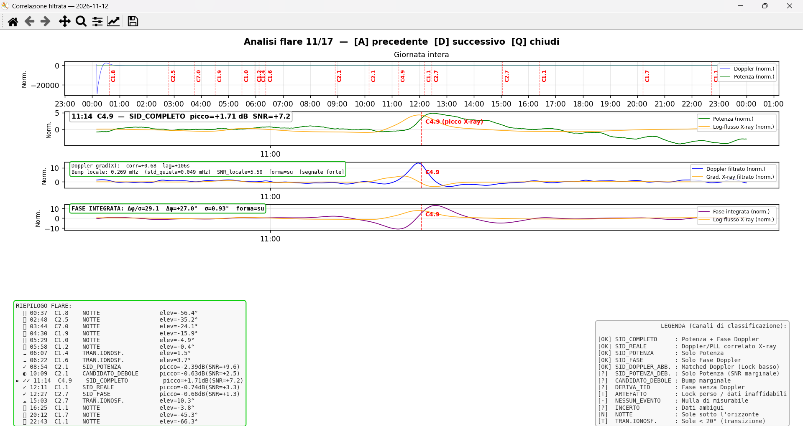
Dettaglio dell'analisi di un singolo evento (Flare C4.9 delle 11:14 UTC). I grafici sovrappongono la normalizzazione del segnale VLF (Potenza, Doppler e Fase Integrata) con il gradiente o il flusso X-ray, evidenziando l'allineamento temporale tra l'attività solare e la risposta ionosferica. In basso è riportato il riepilogo con la classificazione automatica dei flare della giornata.
Detail of a single event analysis (C4.9 flare at 11:14 UTC). The plots overlay the normalised VLF signal (Power, Doppler, and Integrated Phase) with the X-ray gradient or flux, highlighting the temporal alignment between solar activity and ionospheric response. The bottom shows the summary table with the automatic classification of the day's flares.
Scoperte tecniche e metodo Frozen
Technical findings and the Frozen method
• NSY è MSK, non CW — Il segnale di NSY (e dei trasmettitori VLF simili) è Minimum Shift Keying a 200 baud (due toni a f0 ± 50 Hz, senza portante centrale). Questo ha invalidato tutti i test basati su segnale CW e archiviato il demodulatore coerente M2.
• Calcolo della potenza (SFA) — Per i flare impulsivi usare sempre la baseline pre-onset (15–2 minuti prima dell'inizio) e il massimo della curva smussata a 60 s. Il vecchio metodo mediana(evento) − mediana(baseline) "annacquava" il picco (il C9.3 del 10/11 passava da −0.34 dB a +4.37 dB col nuovo metodo).
• Filtro zero-phase e bordi — sosfiltfilt richiede 2–3 ore di padding reale prima della finestra di interesse; tagliare sempre i primi/ultimi 90 minuti di analisi per evitare falsi wander (edge-effect).
• Scale logaritmiche — Power_dB usa 10·log10, Amp_100Hz_dB usa 20·log10: per confronti statistici offline normalizzare Amp_100Hz_dB dividendo per 2. Nel tracker live non si tocca nulla.
• Sanity Check PLL (tasto K) — Funzione diagnostica integrata in analisi_doppler2.py (v5.4, CONGELATA). Analizza la pendenza massima del segnale (Max Slope) per distinguere i veri SID dai glitch hardware (es. micro-drop USB). Se un picco negativo ha una pendenza > 10 mHz/s e manca di correlazione con potenza e X-ray, viene scartato come artefatto. Le soglie non vanno ricalibrate per la V2 senza un test dedicato.
• Metodo Frozen v1.0 — Doppio null empirico, verdetto booleano. È il metodo ufficiale per il Blind Test, in alternativa alla formula predittiva di Claude (smentita dai dati: N=91, ρ=0.066, p=0.53).
• Regola del Gradiente — Vale come allineamento temporale qualitativo su casi selezionati, NON come predittore quantitativo dell'ampiezza del bump Doppler.
• NSY is MSK, not CW — The NSY signal (and similar VLF transmitters) is Minimum Shift Keying at 200 baud (two tones at f0 ± 50 Hz, no central carrier). This invalidated all CW-based tests and archived the M2 coherent demodulator.
• Power calculation (SFA) — For impulsive flares always use the pre-onset baseline (15–2 minutes before onset) and the maximum of the 60-s smoothed curve. The old median(event) − median(baseline) method diluted the peak (C9.3 on 10/11 went from −0.34 dB to +4.37 dB with the new method).
• Zero-phase filter and edges — sosfiltfilt requires 2–3 hours of real padding before the window of interest; always cut the first/last 90 minutes of analysis to avoid false wander (edge effect).
• Sanity Check PLL (key K) — Diagnostic function integrated into analisi_doppler2.py (v5.4, FROZEN). It analyzes the maximum signal slope (Max Slope) to distinguish true SIDs from hardware glitches (e.g., USB micro-drops). If a negative peak has a slope > 10 mHz/s and lacks correlation with power and X-ray, it is discarded as an artifact. Thresholds must not be recalibrated for V2 without a dedicated test.
• Logarithmic scales — Power_dB uses 10·log10, Amp_100Hz_dB uses 20·log10: for offline statistical comparisons normalise Amp_100Hz_dB by dividing by 2. Do not touch the live tracker.
• Frozen method v1.0 — Double empirical null, boolean verdict. It is the official method for the Blind Test, replacing Claude's predictive formula (rejected by data: N=91, ρ=0.066, p=0.53).
• Gradient Rule — Valid as a temporal qualitative alignment on selected cases, NOT as a quantitative predictor of the Doppler bump amplitude.
Script di acquisizione e pipeline di analisi
Acquisition scripts and analysis pipeline
| Script | Funzione |
|---|---|
| sid_tracker_duale.py ↓ | Tracker Multi-PLL v5.2 — acquisizione primaria (V1, V2, BW01, BW02, PESATO in parallelo) |
| sid_tracker_final_SquaringPLL5.py ↓ | Tracker V1 frozen — riferimento di non-regressione |
| analisi_doppler2.py ↓ | Classificatore principale v2.1 (in test, non ancora FROZEN) |
| analisi_multi_pll.py ↓ | Confronto multi-giorno (ADEV, glitch, RMS) tra configurazioni |
| analisi_integrata_sid.py ↓ | Analisi flare GOES + tracker integrata |
| frozen_method.py ↓ | Metodo Frozen v1.0 (doppio null empirico) |
| roc_frozen.py ↓ | Stima falsi allarmi con pipeline Frozen (ROC) |
| event_snr_calculator.py ↓ | Event SNR per singolo evento (Max robusto − baseline / MAD detrend) |
| test_pipeline_pulita.py ↓ | Confronto V1/V2 su banda lenta |
| ricalcola_snr_storico.py ↓ | Audit read-only SNR su eventi storici (v2.1) |
| test_controllo_nullo.py ↓ | Test di significatività su finestre di quiete |
| analisi_adev_esclusione.py ↓ | Test di escissione eventi (ADEV) |
| iniezione_su_iq_reale_tutti.py ↓ | Iniezione di profili SPA su IQ reale (.npy) |
| Script | Function |
|---|---|
| sid_tracker_duale.py ↓ | Multi-PLL tracker v5.2 — primary acquisition (V1, V2, BW01, BW02, PESATO in parallel) |
| sid_tracker_final_SquaringPLL5.py ↓ | Frozen V1 tracker — non-regression reference |
| analisi_doppler2.py ↓ | Main classifier v2.1 (in test, not yet FROZEN) |
| analisi_multi_pll.py ↓ | Multi-day comparison (ADEV, glitch, RMS) between configurations |
| analisi_integrata_sid.py ↓ | Integrated GOES flare + tracker analysis |
| frozen_method.py ↓ | Frozen method v1.0 (double empirical null) |
| roc_frozen.py ↓ | False-alarm estimation with Frozen pipeline (ROC) |
| event_snr_calculator.py ↓ | Event SNR for a single event (robust max − baseline / detrended MAD) |
| test_pipeline_pulita.py ↓ | V1/V2 comparison in the slow band |
| ricalcola_snr_storico.py ↓ | Read-only SNR audit on historical events (v2.1) |
| test_controllo_nullo.py ↓ | Significance test on quiet windows |
| analisi_adev_esclusione.py ↓ | Event excision test (ADEV) |
| iniezione_su_iq_reale_tutti.py ↓ | Injection of SPA profiles on real IQ (.npy) |
Diagnostica del segnale e del rumore
Signal and noise diagnostics
Per monitorare la qualità del segnale e distinguere i cali di propagazione (fading) da eventuali guasti del trasmettitore, la pipeline utilizza lo script visualizza_snr_log.py. Lo script legge i log a 1 Hz prodotti dal tracker e calcola il Segnale Puro (sottraendo linearmente il rumore dalla potenza totale) e l'SNR di banda.
To monitor signal quality and distinguish propagation fading from potential transmitter failures, the pipeline uses the visualizza_snr_log.py script. The script reads the 1 Hz logs produced by the tracker and calculates the Pure Signal (by linearly subtracting noise from total power) and the Band SNR.
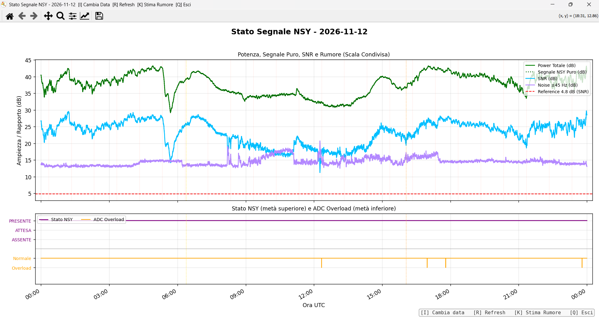
Esempio di utilizzo di visualizza_snr_log.py. Il pannello superiore mostra la Potenza totale, il Segnale Puro, l'SNR (con la soglia di riferimento a 4.8 dB) e il Rumore. Il pannello inferiore mostra la Macchina a Stati (Stato NSY e ADC Overload), fondamentale per verificare che il sistema stia tracciando correttamente il segnale.
Example of using visualizza_snr_log.py. The top panel shows Total Power, Pure Signal, SNR (with the 4.8 dB reference threshold), and Noise. The bottom panel shows the State Machine (NSY State and ADC Overload), essential for verifying that the system is correctly tracking the signal.
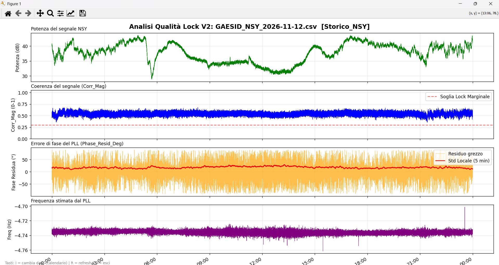
Esempio di utilizzo di analisi_qualita_lock.py. Il viewer mostra la telemetria diagnostica della V2: Potenza del segnale, Coerenza del Lock (Corr_Mag), Residuo di fase (Phase_Resid_Deg con std locale a 5 minuti) e Frequenza stimata dal PLL. Consente di verificare la coerenza teorica del lock: se il PLL è ben agganciato (Corr_Mag alto), la varianza del residuo di fase deve essere bassa.
Example of using analisi_qualita_lock.py. The viewer shows the V2 diagnostic telemetry: Signal Power, Lock Coherence (Corr_Mag), Phase Residual (Phase_Resid_Deg with local 5-minute std), and PLL estimated Frequency. It allows verifying the theoretical lock consistency: if the PLL is well locked (high Corr_Mag), the variance of the phase residual should be low.
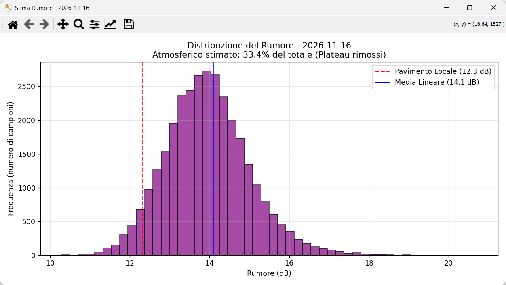
Esempio di istogramma della distribuzione del rumore generato premendo il tasto K in visualizza_snr_log.py. Lo script rimuove i plateau anomali (salti bruschi) e calcola il Pavimento Locale (linea rossa, 5° percentile) e la Media Lineare del rumore (linea blu). Sottraendo linearmente il pavimento locale dalla media, si stima la percentuale di rumore atmosferico (le sferiche lontane) rispetto al rumore totale. Poiché il rumore atmosferico è quello che viene assorbito dalla ionosfera durante un flare (SDA), monitorare questa percentuale è fondamentale per valutare la sensibilità della stazione.
Example of a noise distribution histogram generated by pressing the K key in visualizza_snr_log.py. The script removes anomalous plateaus (sharp jumps) and calculates the Local Floor (red line, 5th percentile) and the Linear Mean of the noise (blue line). By linearly subtracting the local floor from the mean, it estimates the percentage of atmospheric noise (distant sferics) compared to total noise. Since atmospheric noise is what gets absorbed by the ionosphere during a flare (SDA), monitoring this percentage is crucial to assess the station's sensitivity.
Visualizzatori e strumenti diagnostici
Viewers and diagnostic tools
| Script | Funzione |
|---|---|
| visualizza_tempesta.py ↓ | Viewer read-only per tempeste geomagnetiche (calendario Tk, doppio asse Y, fase segmentata) |
| analisi_qualita_lock.py ↓ | Viewer qualità lock V2 (Corr_Mag, Phase_Resid, tabella varianza) |
| visualizza_snr_log.py ↓ | Viewer log SNR 1 Hz (curve smussate + macchina a stati) |
| stima_rumore_locale.py ↓ | Stima rumore locale (5° percentile) vs atmosferico (sottrazione lineare) |
| analisi_rumore_IQ.py ↓ | Kurtosis e PSD media dei file IQ (.npy) |
| pulisci_doppler.py ↓ | Visualizzatore Doppler (analisi visiva eventi) |
| pulisci_pll.py ↓ | Visualizzatore PLL (analisi visiva fase) |
| test_gain_sweep.py ↓ | Sweep automatico Gain IF (SNR vs overload) |
| Script | Function |
|---|---|
| visualizza_tempesta.py ↓ | Read-only geomagnetic storm viewer (Tk calendar, dual Y axis, segmented phase) |
| analisi_qualita_lock.py ↓ | V2 lock quality viewer (Corr_Mag, Phase_Resid, variance table) |
| visualizza_snr_log.py ↓ | 1 Hz SNR log viewer (smoothed curves + state machine) |
| stima_rumore_locale.py ↓ | Local noise estimation (5th percentile) vs atmospheric (linear subtraction) |
| analisi_rumore_IQ.py ↓ | Kurtosis and mean PSD of IQ files (.npy) |
| pulisci_doppler.py ↓ | Doppler viewer (visual event analysis) |
| pulisci_pll.py ↓ | PLL viewer (visual phase analysis) |
| test_gain_sweep.py ↓ | Automatic IF gain sweep (SNR vs overload) |
Stato del congelamento e Blind Test di Dicembre 2026
Freezing status and December 2026 Blind Test
Il congelamento della pipeline di analisi è organizzato in 5 blocchi:
• Blocco 0 — Coerenza documentale: CHIUSO (13/11/2026).
• Blocco 1 — Omogeneizzazione dataset storico: CHIUSO (13/11/2026).
• Blocco 2 — Test di regressione su giorni di Ottobre (senza Corr_Mag, fallback su Amp100): PENDENTE.
• Blocco 3 — Calibrazione placebo Fase Integrata + verifica Matched Doppler: PENDENTE.
• Blocco 4 — Protocollo Blind Test scritto (PROTOCOLLO_BLIND_TEST_DIC2026.md): PENDENTE.
Dopo il completamento dei Blocchi 2–4: calcolo SHA-256 di analisi_doppler2.py e doppler_pool_v1.0.parquet, inserimento hash in PREG.md, dichiarazione ufficiale "FROZEN per Blind Test Dicembre 2026" e divieto di modifica a soglie, logica e maschere.
La patch di logging del 14/11/2026 a sid_tracker_duale.py è dichiarata NON-DSP e NON-CONGELATA: non tocca DSP, soglie, macchina a stati né formato CSV, quindi non incide sui criteri di congelamento di analisi_doppler2.py.
The freezing of the analysis pipeline is organised in 5 blocks:
• Block 0 — Documentation consistency: CLOSED (13/11/2026).
• Block 1 — Historical dataset homogenisation: CLOSED (13/11/2026).
• Block 2 — Regression test on October days (without Corr_Mag, fallback to Amp100): PENDING.
• Block 3 — Integrated Phase placebo calibration + Matched Doppler verification: PENDING.
• Block 4 — Written Blind Test protocol (PROTOCOLLO_BLIND_TEST_DIC2026.md): PENDING.
After completing Blocks 2–4: compute SHA-256 of analisi_doppler2.py and doppler_pool_v1.0.parquet, insert hashes into PREG.md, declare officially "FROZEN for December 2026 Blind Test", and prohibit changes to thresholds, logic and masks.
The 14/11/2026 logging patch to sid_tracker_duale.py is declared NON-DSP and NON-FROZEN: it does not touch DSP, thresholds, state machine or CSV format, and therefore does not affect the freezing criteria of analisi_doppler2.py.
iq_baseline_*.npy, iq_trigger_*.npy, iq_manuale_*.npy) e i log diagnostici (tracker_*.log, snr_log_*.csv) sono traccia forense: non cancellarli senza backup.
iq_baseline_*.npy, iq_trigger_*.npy, iq_manuale_*.npy) and diagnostic logs (tracker_*.log, snr_log_*.csv) are forensic evidence: do not delete them without a backup.
Visualizzazione e Analisi Visuale
Visualization and Visual Analysis
La suite di visualizzazione è stata sviluppata per interpretare i dati grezzi e correlarli con gli eventi solari. L'interfaccia principale, Visualizza_37, unifica in un unico ambiente tutte le funzionalità sviluppate nel tempo (overlay X-ray, rilevamento GRB, monitoraggio geomagnetico e intelligenza artificiale).
The visualization suite was developed to interpret raw data and correlate it with solar events. The main interface, Visualizza_37, unifies all the functionalities developed over time into a single environment (X-ray overlay, GRB detection, geomagnetic monitoring, and artificial intelligence).
Visualizza_37_NSY_XRAY_Flares_GRB_CME_con AI Claude.py ↓ — Rappresenta l'evoluzione definitiva e il centro di controllo principale della stazione. Questo script unifica in un'unica interfaccia tutte le funzionalità sviluppate nel tempo. Le principali caratteristiche includono:
- • Visualizzazione VLF e X-ray: Grafici del segnale NSY con overlay del flusso X-ray GOES, gestione dello smoothing (tasti S/V), scala lineare/logaritmica (tasto U) e calendario interattivo (tasto I).
- • Rilevamento Flares e GRB: Marker automatici per i brillamenti NOAA (tasto F) e per il catalogo Fermi GBM (tasti G/B), con calcolo dell'elevazione della sorgente e della fluenza.
- • Monitoraggio Geomagnetico: Integrazione dei dati Kp (GFZ Potsdam), tempeste (DONKI NASA), CME e flusso protonico (SEP) con calcolo del punteggio di impatto nella status bar. Il tasto Y apre il report annuale degli eventi.
- • Rilevamento SID con AI: Integrazione nativa con
sid_ai.py(Random Forest) per l'addestramento interattivo (tasto H), il rilevamento automatico (tasto T), la gestione della soglia (tasto P) e la visualizzazione del dataset (tasto L).
▶ Nota: Questo script è l'interfaccia ufficiale per l'analisi quotidiana e la preparazione al Blind Test.
Visualizza_37_NSY_XRAY_Flares_GRB_CME_con AI Claude.py ↓ — Represents the ultimate evolution and the main control center of the station. This script unifies all the functionalities developed over time into a single interface. Main features include:
- • VLF and X-ray Visualization: NSY signal charts with GOES X-ray flux overlay, smoothing management (keys S/V), linear/logarithmic scale (key U), and interactive calendar (key I).
- • Flares and GRB Detection: Automatic markers for NOAA flares (key F) and the Fermi GBM catalogue (keys G/B), with calculation of source elevation and fluence.
- • Geomagnetic Monitoring: Integration of Kp data (GFZ Potsdam), storms (NASA DONKI), CMEs, and proton flux (SEP) with impact score calculation in the status bar. Key Y opens the annual events report.
- • AI-based SID Detection: Native integration with
sid_ai.py(Random Forest) for interactive training (key H), automatic detection (key T), threshold management (key P), and dataset visualization (key L).
▶ Note: This script is the official interface for daily analysis and Blind Test preparation.
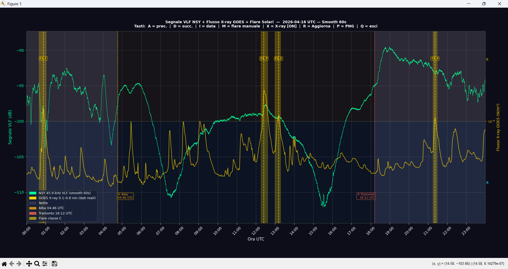
Esempio dell'overlay X-ray GOES implementato nello script. Nell'immagine è visibile un Flare C1.7
Example of the GOES X-ray overlay implemented in the script. A C1.7 flare is visible in the image
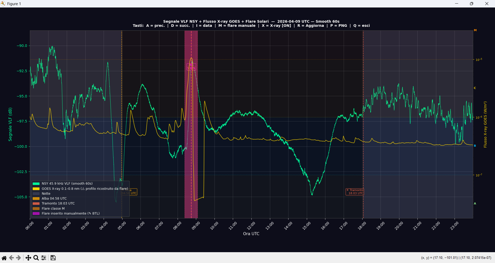
Esempio dell'overlay X-ray GOES implementato nello script. Nell'immagine è visibile un Flare M1.06
Example of the GOES X-ray overlay implemented in the script. A M1.06 flare is visible in the image.
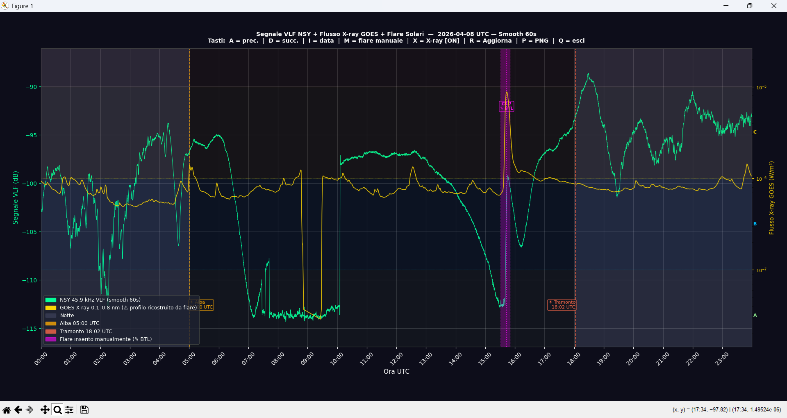
Esempio dell'overlay X-ray GOES implementato nello script. Nell'immagine è visibile un Flare C8.7
Example of the GOES X-ray overlay implemented in the script. A C8.7 flare is visible in the image.
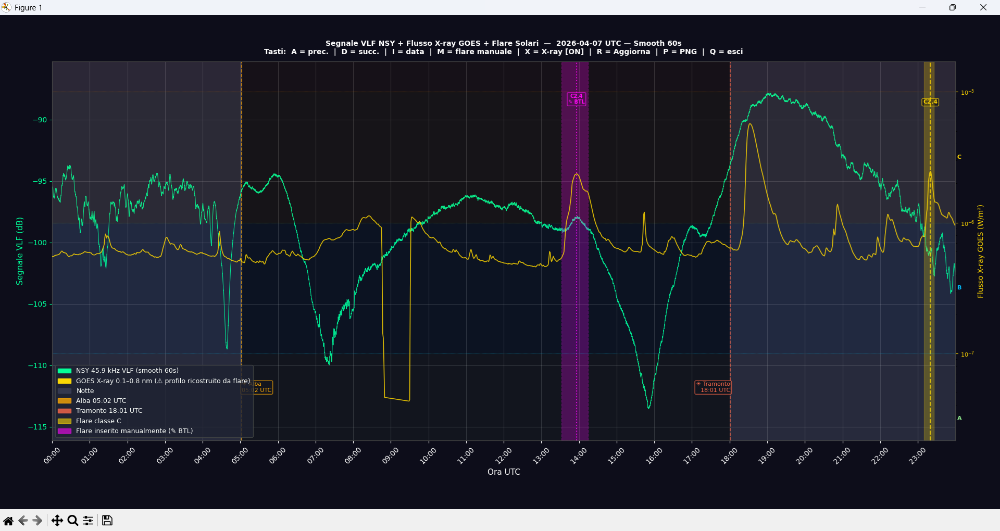
Esempio dell'overlay X-ray GOES implementato nello script. Nell'immagine è visibile un Flare C2.4
Example of the GOES X-ray overlay implemented in the script. A C2.4 flare is visible in the image.
Rilevazione dei flare di Classe C tramite la Fase
Detection of Class C flares via the Phase
Nel monitoraggio VLF tradizionale (basato sulla sola ampiezza del segnale o potenza), i brillamenti solari di classe C sono spesso considerati "invisibili" o al limite della soglia di rumore. Tuttavia, l'esperienza della stazione GAESID ha dimostrato che la classe del flare non è la variabile predittiva: ciò che conta è la velocità di salita (il gradiente X-ray) e il rumore ionosferico del momento. Un flare C1.5 impulsivo può generare una firma inequivocabile, mentre un C2.1 più lento può non produrre alcuna variazione.
La chiave per scovare questi eventi risiede nell'uso combinato del Canale Doppler e della Fase Integrata. La frequenza è la derivata della fase: una piccola perturbazione ionosferica (es. un salto di +5° in 10 minuti) produce una variazione di frequenza media di appena ~0.023 mHz, che è totalmente sepolta nel rumore istantaneo del PLL (circa 2 mHz). Tuttavia, integrando questa piccola variazione nel tempo, il segnale emerge dal rumore.
In traditional VLF monitoring (based solely on signal amplitude or power), solar flares of class C are often considered "invisible" or at the noise threshold. However, the experience of the GAESID station has shown that the flare class is not the predictive variable: what matters is the rise speed (the X-ray gradient) and the ionospheric noise at that moment. An impulsive C1.5 flare can generate an unambiguous signature, while a slower C2.1 may produce no variation at all.
The key to finding these events lies in the combined use of the Doppler Channel and the Integrated Phase. Frequency is the derivative of phase: a small ionospheric perturbation (e.g., a +5° step in 10 minutes) produces an average frequency variation of just ~0.023 mHz, which is completely buried in the PLL's instantaneous noise (about 2 mHz). However, by integrating this small variation over time, the signal emerges from the noise.
Casi Studio dalla fine del 2026
Case Studies from late 2026
1. Il paradosso del C1.5 dell'8 Novembre. Alle 09:47 UTC un flare C1.5 ha prodotto una firma inequivocabile nel canale di Potenza (SFE con un picco di +4.54 dB e SNR +20.1). Visivamente, nel pannello Doppler (linea blu), è possibile notare un piccolo ma evidente bump in corrispondenza dell'evento. Tuttavia, il classificatore v2.1 (basato su soglie numeriche) valuta il Doppler sotto la soglia di rumore (SNR_locale 0.24). Questo evidenzia un limite dell'algoritmo automatico: c'è spazio per migliorare l'analisi e catturare quei segnali che l'occhio umano riesce a distinguere dal rumore. Inoltre, l'algoritmo lo ha scartato perché troppo vicino (20 minuti) al flare successivo C2.1. Il paradosso? Il C2.1 (più forte sulla carta) non ha prodotto alcuna variazione VLF misurabile (0.00 dB). Questo dimostra che scartare gli eventi basandosi solo sulla classe GOES o su vincoli temporali rigidi porta a perdere i veri eventi fisici.
2. L'effetto cunetta dell'M1.2 del 7 Novembre. Alle 12:43 UTC, il Doppler grezzo era quasi invisibile (SNR 1.34) perché la ionosfera era ancora perturbata dal flare precedente. Tuttavia, la Fase Integrata ha mostrato una "cunetta" ben visibile (Δφ = +2.48°, Δφ/σ = 10.29). La fisica è chiara: l'M1.2 ha agito su una ionosfera già "spostata", producendo un piccolo gradino che la derivata (Doppler) non ha visto, ma l'integrale (Fase) ha accumulato e reso visibile.
3. Il C2.7 dell'8 Novembre. Nonostante la classe modesta, ha prodotto un bump Doppler ben visibile all'occhio, perfettamente allineato al picco di gradiente X-ray (11:22 UTC) e non al picco di flusso (11:27 UTC). Tuttavia, il classificatore automatico (v2.1) assegna a questo Doppler un SNR_locale di 2.07, un valore appena sotto la soglia minima (2.5), classificandolo come "segnale debole". L'evento è quindi salvato dal canale di Potenza (+3.42 dB, SNR +16.3) come SID_POTENZA. Ancora una volta, la Regola del Gradiente spiega l'allineamento temporale, ma emerge la necessità di affinare le soglie automatiche per i bump visivamente evidenti ma statisticamente al limite.
1. The C1.5 paradox of November 8. At 09:47 UTC, a C1.5 flare produced an unambiguous signature in the Power channel (SFE with a peak of +4.54 dB and SNR +20.1). Visually, in the Doppler panel (blue line), a small but evident bump is noticeable corresponding to the event. However, the v2.1 classifier (based on numerical thresholds) evaluates the Doppler below the noise threshold (local SNR 0.24). This highlights a limitation of the automatic algorithm: there is room for improving the analysis to capture those signals that the human eye can distinguish from noise. Furthermore, the algorithm discarded it because it was too close (20 minutes) to the subsequent C2.1 flare. The paradox? The C2.1 (stronger on paper) produced no measurable VLF variation (0.00 dB). This proves that discarding events based solely on GOES class or rigid time constraints leads to missing the true physical events.
2. The dip effect of the M1.2 on November 7. At 12:43 UTC, the raw Doppler was almost invisible (SNR 1.34) because the ionosphere was still perturbed by the previous flare. However, the Integrated Phase showed a clearly visible "dip" (Δφ = +2.48°, Δφ/σ = 10.29). The physics is clear: the M1.2 acted on an already "shifted" ionosphere, producing a small step that the derivative (Doppler) did not see, but the integral (Phase) accumulated and made visible.
3. The C2.7 of November 8. Despite the modest class, it produced a Doppler bump clearly visible to the eye, perfectly aligned with the X-ray gradient peak (11:22 UTC) and not the flux peak (11:27 UTC). However, the automatic classifier (v2.1) assigns this Doppler a local SNR of 2.07, just below the minimum threshold (2.5), classifying it as a "weak signal". The event is therefore rescued by the Power channel (+3.42 dB, SNR +16.3) as SID_POTENZA. Once again, the Gradient Rule explains the temporal alignment, but the need to refine automatic thresholds for visually evident but statistically borderline bumps emerges.
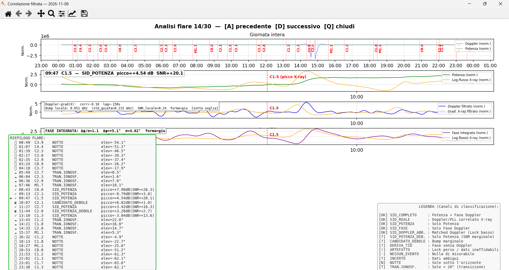
Analisi del flare C1.5 dell'8 Novembre (v2.1). Il grafico mostra come il canale di Potenza (in verde) abbia un picco netto (+4.54 dB, SNR +20.1). Anche il pannello Doppler (in blu) mostra visivamente un bump in corrispondenza dell'evento. Tuttavia, il classificatore automatico non lo rileva come significativo (SNR_locale 0.24, forma "giu"), classificando l'evento solo come SID_POTENZA. Questo caso dimostra che l'analisi visiva rimane uno strumento fondamentale per scoprire i limiti degli algoritmi automatici.
Analysis of the C1.5 flare of November 8 (v2.1). The chart shows how the Power channel (green) has a clear peak (+4.54 dB, SNR +20.1). The Doppler panel (blue) also visually shows a bump corresponding to the event. However, the automatic classifier does not detect it as significant (local SNR 0.24, "down" shape), classifying the event only as SID_POTENZA. This case proves that visual analysis remains a fundamental tool for discovering the limitations of automatic algorithms.
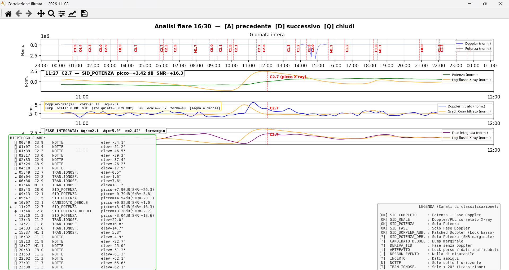
Analisi del flare C2.7 dell'8 Novembre (v2.1). Il canale Doppler (in blu) mostra chiaramente un bump in corrispondenza del gradiente X-ray (picco a 11:22 UTC), ma il classificatore assegna un SNR_locale di 2.07 (sotto la soglia di 2.5). L'evento viene quindi classificato come SID_POTENZA grazie al forte picco di potenza (+3.42 dB, SNR +16.3). Questo conferma che la Regola del Gradiente funziona a livello visivo, ma le soglie automatiche necessitano di ulteriori calibrazioni.
Analysis of the C2.7 flare of November 8 (v2.1). The Doppler channel (blue) clearly shows a bump corresponding to the X-ray gradient (peak at 11:22 UTC), but the classifier assigns a local SNR of 2.07 (below the 2.5 threshold). The event is therefore classified as SID_POTENZA thanks to the strong power peak (+3.42 dB, SNR +16.3). This confirms that the Gradient Rule works visually, but automatic thresholds require further calibration.
Ispezione visiva con pulisci_doppler.py e pulisci_pll.py
Visual inspection with pulisci_doppler.py and pulisci_pll.py
Per validare visivamente i transienti e verificare la robustezza dei filtri, la pipeline utilizza due script diagnostici interattivi. Il primo, pulisci_doppler.py, permette di confrontare diverse tecniche di estrazione del segnale (mediana, Hampel, passa-basso, passa-banda) per assicurarsi che il "bump" non sia un artefatto del rumore. Il secondo, pulisci_pll.py, mostra la frequenza istantanea del PLL e il suo andamento smussato, permettendo di vedere la firma fisica del flare in tempo reale.
To visually validate transients and verify filter robustness, the pipeline uses two interactive diagnostic scripts. The first, pulisci_doppler.py, allows comparing different signal extraction techniques (median, Hampel, low-pass, band-pass) to ensure the "bump" is not a noise artifact. The second, pulisci_pll.py, shows the PLL's instantaneous frequency and its smoothed trend, allowing the physical signature of the flare to be seen in real time.
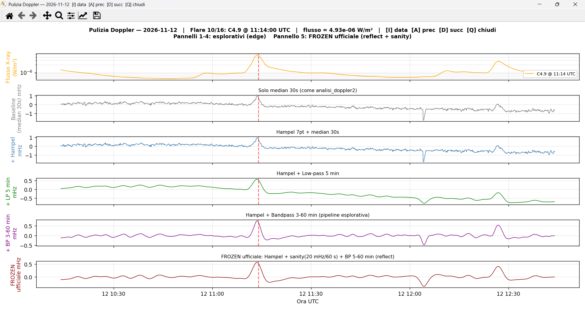
Esempio di utilizzo di pulisci_doppler.py sul flare C4.9 del 12 Novembre 2026. Il tool permette di confrontare diverse tecniche di filtraggio (mediana, Hampel, low-pass, band-pass). Il pannello in basso (rosso) mostra la pipeline ufficiale FROZEN (reflect + sanity) che estrae in modo pulito il transiente Doppler, perfettamente allineato con il flusso X-ray (pannello superiore).
Example of using pulisci_doppler.py on the C4.9 flare of 12 November 2026. The tool allows comparing different filtering techniques (median, Hampel, low-pass, band-pass). The bottom panel (red) shows the official FROZEN pipeline (reflect + sanity) which cleanly extracts the Doppler transient, perfectly aligned with the X-ray flux (top panel).
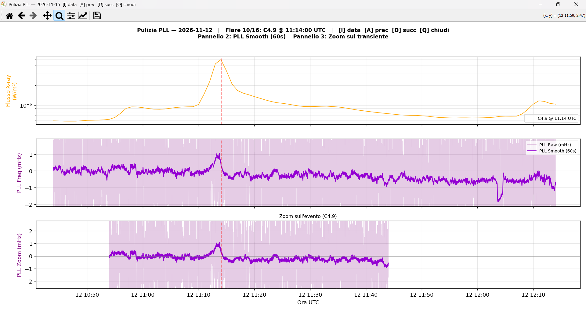
Esempio di utilizzo di pulisci_pll.py per lo stesso evento. In alto il flusso X-ray GOES, al centro la frequenza del PLL (grezza in rosa, smussata a 60 s in viola) e in basso uno zoom sul transiente. È possibile notare come il PLL registri una piccola ma netta deviazione di frequenza (circa 1 mHz) in coincidenza del massimo gradiente X-ray.
Example of using pulisci_pll.py for the same event. Top: GOES X-ray flux. Middle: PLL frequency (raw in pink, 60s smoothed in purple). Bottom: zoom on the transient. You can see how the PLL records a small but clear frequency deviation (about 1 mHz) coinciding with the maximum X-ray gradient.
Tempeste geomagnetiche e segnale VLF
Geomagnetic storms and VLF signal
Le tempeste geomagnetiche sono perturbazioni del campo magnetico terrestre causate dall'arrivo di espulsioni di massa coronale (CME) dal Sole. A differenza dei SID, che sono innescati dalla radiazione UV e X di un brillamento — istantanea, con effetti limitati al lato diurno della Terra — le tempeste geomagnetiche sono causate dall'impatto fisico di plasma solare e campo magnetico interplanetario sulla magnetosfera terrestre.
Il ritardo tra il brillamento e l'impatto della CME è tipicamente di 1–3 giorni, a seconda della velocità di eiezione. Gli effetti ionosferici sono globali, colpiscono anche la ionosfera notturna e si sviluppano su scale temporali di ore, non di minuti come i SID.
Sul segnale VLF la firma di una tempesta geomagnetica è morfologicamente molto diversa da quella di un SID: invece della caratteristica forma a campana rapida e simmetrica, si osservano oscillazioni lente e ondulate sovrapposte alla curva diurna normale, con periodi di decine di minuti. Queste oscillazioni sono la firma delle Atmospheric Gravity Waves (AGW): il riscaldamento ionosferico per precipitazione di particelle energetiche genera onde di pressione che modulano l'altezza del riflettore VLF, alterando le condizioni di propagazione del segnale NSY nel percorso Torino–Niscemi.
Grazie al modulo geomagnetico integrato in Visualizza_37, è ora possibile monitorare in tempo reale:
- • Indice Kp (da GFZ Potsdam) per valutare l'intensità della tempesta in atto.
- • Eventi GST e CME con arrivo (da DONKI) per avere un preavviso di potenziali disturbi.
- • Flusso protonico >10 MeV e velocità del vento solare per una visione completa dell'attività solare.
- • Classificazione automatica dell'impatto sul segnale SID, mostrata nella status bar del grafico.
Premendo il tasto Y nello script Visualizza_37_NSY_XRAY_Flares_GRB_CME_con AI Claude.py, si apre un report annuale dettagliato di tutti gli eventi geomagnetici (come mostrato nell'immagine sottostante), con orari di SSC, Kp massimo, finestra di anomalia stimata, SEP associati e valori Kp orari, permettendo di correlare gli eventi con le registrazioni VLF della stazione.
Geomagnetic storms are disturbances of Earth's magnetic field caused by the arrival of coronal mass ejections (CMEs) from the Sun. Unlike SIDs, which are triggered by UV and X-ray radiation from a solar flare — instantaneous, with effects limited to the dayside of Earth — geomagnetic storms are caused by the physical impact of solar plasma and interplanetary magnetic field on Earth's magnetosphere.
The delay between the flare and the CME impact is typically 1–3 days, depending on ejection speed. The ionospheric effects are global, affect even the nightside ionosphere, and develop on timescales of hours, not minutes as with SIDs.
On the VLF signal, the signature of a geomagnetic storm is morphologically very different from that of a SID: instead of the characteristic rapid and symmetric bell shape, slow undulating oscillations superimposed on the normal daytime curve are observed, with periods of tens of minutes. These oscillations are the signature of Atmospheric Gravity Waves (AGW): ionospheric heating by energetic particle precipitation generates pressure waves that modulate the VLF reflector height, altering the propagation conditions of the NSY signal along the Turin–Niscemi path.
Thanks to the geomagnetic module integrated in Visualizza_37, it is now possible to monitor in real time:
- • Kp index (from GFZ Potsdam) to assess the ongoing storm intensity.
- • GST and CME events with arrival (from DONKI) for early warning of potential disturbances.
- • Proton flux >10 MeV and solar wind speed for a comprehensive view of solar activity.
- • Automatic impact classification on the SID signal, displayed in the chart status bar.
By pressing the Y key in the Visualizza_37_NSY_XRAY_Flares_GRB_CME_con AI Claude.py script, a detailed annual report of all geomagnetic events opens (as shown in the image below), including SSC times, maximum Kp, estimated anomaly window, associated SEPs, and hourly Kp values, allowing direct correlation with the station's VLF recordings.
Evento: CME Cannibale AR4455 — 4–5 giugno 2026
Event: Cannibal CME AR4455 — 4–5 June 2026
Il 3 giugno 2026 la regione di macchie solari AR4455 ha emesso tre espulsioni di massa coronale in rapida successione. L'ultima, la più veloce, ha raggiunto e inglobato le precedenti prima dell'impatto con la Terra, dando origine a quella che viene definita una CME cannibale. Il NOAA/SWPC ha emesso un'allerta per tempesta geomagnetica di categoria G3–G4 (forte–severa).
L'impatto del fronte della CME sulla magnetosfera terrestre è avvenuto nelle ore notturne tra il 4 e il 5 giugno. Gli effetti ionosferici sul segnale NSY ricevuto dalla stazione GAESID sono stati osservati a partire dalle prime ore del 5 giugno, con la firma più caratteristica nella fascia oraria 06:00–11:00 UTC, immediatamente dopo l'alba ionosferica locale.
Durante questa finestra il segnale NSY, invece di seguire la normale discesa diurna liscia e regolare, ha mostrato oscillazioni ondulate con periodi di circa 20–40 minuti, sovrapposte alla tendenza generale. Queste Wave-Like Signatures (WLS) sono coerenti con la propagazione di Atmospheric Gravity Waves generate dal riscaldamento ionosferico per precipitazione di particelle energetiche. Dopo le 11:00 UTC il segnale ha recuperato un andamento diurno regolare, con i successivi flare di classe C chiaramente riconoscibili come SID distinti.
L'integrazione del modulo geomagnetico in Visualizza_37 ha permesso di confermare la correlazione: il valore di Kp raggiunto è stato 6.7 (G3), il vento solare ha superato i 700 km/s e si è registrato un evento protonico moderato. La status bar del grafico ha segnalato automaticamente un impatto FORTE sul segnale SID, in perfetto accordo con le oscillazioni osservate.
On 3 June 2026, the sunspot region AR4455 emitted three coronal mass ejections in rapid succession. The last, and fastest, caught up with and engulfed the previous ones before impact with Earth, producing what is known as a cannibal CME. NOAA/SWPC issued a geomagnetic storm alert of category G3–G4 (strong–severe).
The CME front impacted Earth's magnetosphere during the night of 4–5 June. The ionospheric effects on the NSY signal received by the GAESID station were observed from the early hours of 5 June, with the most characteristic signature in the 06:00–11:00 UTC window, immediately following local ionospheric dawn.
During this window the NSY signal, instead of following the normal smooth and regular daytime descent, showed undulating oscillations with periods of approximately 20–40 minutes, superimposed on the general trend. These Wave-Like Signatures (WLS) are consistent with the propagation of Atmospheric Gravity Waves generated by ionospheric heating from energetic particle precipitation. After 11:00 UTC the signal recovered a regular daytime behaviour, with subsequent class-C flares clearly recognisable as distinct SIDs.
The integration of the geomagnetic module in Visualizza_37 allowed confirmation of the correlation: the Kp index reached 6.7 (G3), solar wind exceeded 700 km/s, and a moderate proton event was recorded. The chart status bar automatically flagged a STRONG impact on the SID signal, perfectly matching the observed oscillations.
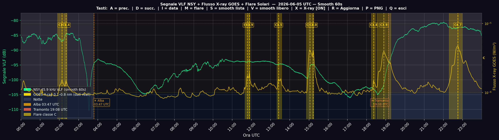
Segnale NSY 45,9 kHz del 5 giugno 2026. La notte (00:00–03:47 UTC) mostra un andamento normale. Nella fascia 06:00–11:00 UTC sono chiaramente visibili le oscillazioni lente caratteristiche delle Atmospheric Gravity Waves (AGW), indotte dalla tempesta geomagnetica G3 generata dalla CME cannibale AR4455. Dopo le 11:00 UTC il segnale torna regolare e i flare di classe C producono SID ben distinti.
NSY 45.9 kHz signal on 5 June 2026. The night period (00:00–03:47 UTC) shows normal behaviour. In the 06:00–11:00 UTC window, slow oscillations characteristic of Atmospheric Gravity Waves (AGW) are clearly visible, induced by the G3 geomagnetic storm generated by the AR4455 cannibal CME. After 11:00 UTC the signal returns to normal and class-C flares produce well-distinct SIDs.
Report annuale e analisi giornaliera delle tempeste
Annual report and daily storm analysis
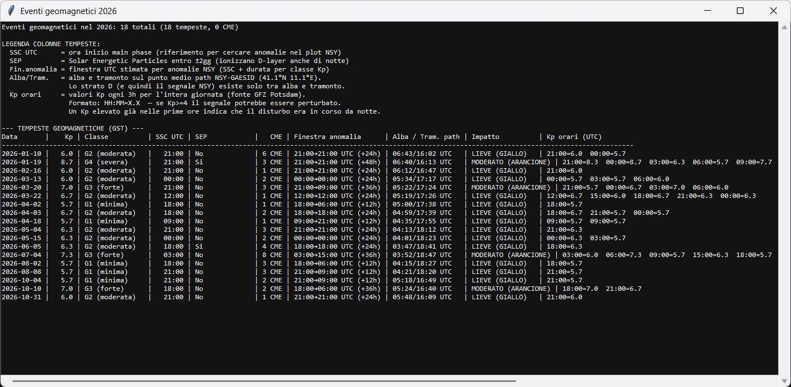
Report testuale generato premendo il tasto Y nello script di visualizzazione. L'elenco riassume tutti gli eventi geomagnetici dell'anno (tempeste GST e CME con arrivo), indicando per ciascuno l'orario SSC, il Kp massimo, la finestra di anomalia stimata sul segnale VLF, la presenza di SEP, il numero di CME collegate e l'orario di alba/tramonto sul percorso.
Text report generated by pressing the Y key in the visualisation script. The list summarises all geomagnetic events of the year (GST storms and CMEs with arrival), indicating for each the SSC time, maximum Kp, estimated anomaly window on the VLF signal, presence of SEPs, number of linked CMEs, and sunrise/sunset time along the path.
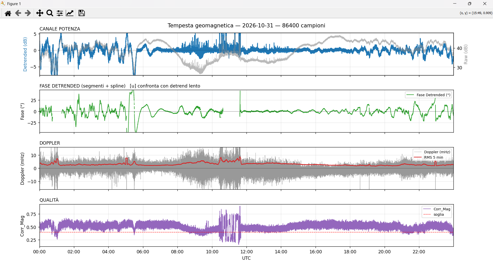
Esempio di utilizzo di visualizza_tempesta.py per l'analisi di una giornata di tempesta (31 Ottobre 2026). Lo script mostra la Potenza detrended, la Fase detrended (con spline segmentata), il Doppler (con RMS a 5 min) e la Qualità del Lock (Corr_Mag). In questo modo è possibile osservare come le perturbazioni geomagnetiche agiscano su tutti i canali contemporaneamente, generando oscillazioni anomale anche nella fase.
Example of using visualizza_tempesta.py for the analysis of a storm day (31 October 2026). The script shows Detrended Power, Detrended Phase (with segmented spline), Doppler (with 5-min RMS), and Lock Quality (Corr_Mag). This allows observing how geomagnetic disturbances act on all channels simultaneously, generating anomalous oscillations even in the phase.
Rilevazione dei GRB con il segnale VLF
GRB Detection via VLF Signal
I Gamma-Ray Bursts (GRB) sono le esplosioni cosmiche più energetiche conosciute: lampi di radiazione gamma di durata variabile da frazioni di secondo (GRB corti, prodotti dalla fusione di stelle di neutroni) a centinaia di secondi (GRB lunghi, associati al collasso di stelle massive). L'energia irradiata è tale da renderli osservabili a miliardi di anni luce di distanza.
Quando un GRB sufficientemente intenso avviene con la sorgente sopra l'orizzonte terrestre, la sua radiazione gamma — pur provenendo da distanze cosmologiche — è in grado di ionizzare ulteriormente lo strato D della ionosfera (60–90 km di quota), esattamente come fa la radiazione X di un brillamento solare. La conseguenza è una variazione improvvisa del livello del segnale VLF ricevuto: una firma ionosferica morfologicamente analoga a quella di un SID solare, ma producibile a qualsiasi ora del giorno e indipendente dall'attività del Sole.
Il caso storico di riferimento è il GRB 221009A (soprannominato BOAT — Brightest Of All Time), avvenuto il 9 ottobre 2022: con una fluenza di circa 0,21 erg/cm² nella banda 10–1000 keV, ha prodotto perturbazioni ionosferiche rilevabili in tutto il mondo, incluse stazioni VLF amatoriali. Il catalogo Fermi GBM registra mediamente 1–2 GRB al giorno, ma solo una piccola frazione supera la soglia di fluenza sufficiente a causare un SID rilevabile da terra.
Gamma-Ray Bursts (GRBs) are the most energetic cosmic explosions known: flashes of gamma radiation ranging in duration from fractions of a second (short GRBs, produced by neutron star mergers) to hundreds of seconds (long GRBs, associated with the collapse of massive stars). The radiated energy is sufficient to make them detectable from billions of light-years away.
When a sufficiently intense GRB occurs with its source above Earth's horizon, its gamma radiation — despite originating at cosmological distances — is capable of further ionising the D layer of the ionosphere (60–90 km altitude), in exactly the same way as the X-ray radiation from a solar flare. The result is a sudden change in the received VLF signal level: an ionospheric signature morphologically analogous to a solar SID, but producible at any time of day and independent of solar activity.
The historical reference case is GRB 221009A (nicknamed BOAT — Brightest Of All Time), which occurred on 9 October 2022: with a fluence of approximately 0.21 erg/cm² in the 10–1000 keV band, it produced ionospheric disturbances detectable worldwide, including by amateur VLF stations. The Fermi GBM catalogue records an average of 1–2 GRBs per day, but only a small fraction exceed the fluence threshold sufficient to produce a ground-detectable SID.
Implementazione nella stazione GAESID
Implementation at the GAESID station
Lo script Visualizza_37 integra un modulo GRB che, per ogni giornata selezionata, interroga automaticamente il database Fermi GBM tramite il servizio TAP di HEASARC, recuperando nome, orario di trigger UTC, durata T90, fluenza e coordinate celesti di tutti i GRB registrati dal satellite.
Per ogni evento vengono poi calcolate due quantità fisiche fondamentali per la valutazione della rilevabilità:
• Elevazione della sorgente — viene calcolata l'altitudine in gradi della sorgente GRB sull'orizzonte del punto medio del percorso NSY–GAESID al momento del trigger. La soglia minima è fissata a −5°: GRB con sorgente più bassa vengono scartati perché il segnale sarebbe completamente assorbito dall'atmosfera. Il valore, più conservativo rispetto alle prime versioni dello script, tiene conto dell'incertezza geometrica di ±3°–4° dovuta all'uso del punto medio del percorso e della penetrazione della radiazione gamma 10–1000 keV di qualche grado sotto l'orizzonte geometrico.
• Fluenza (erg/cm², banda 10–1000 keV) — la quantità di energia per unità di superficie depositata dalla radiazione gamma. La soglia di rilevabilità è fissata empiricamente a 10⁻⁴ erg/cm², valore che corrisponde agli eventi più intensi del catalogo Fermi. Solo eventi ECCEZIONALI che superano questa soglia sono considerati potenzialmente rilevabili dalla stazione GAESID.
I dati GRB vengono salvati in cache locale JSON nella cartella grb_cache per evitare query ripetute alla stessa data. La status bar in basso a destra del grafico indica sempre in tempo reale se sono presenti GRB rilevabili nella giornata visualizzata, indipendentemente dallo stato del toggle G.
The Visualizza_37 script integrates a GRB module that, for each selected day, automatically queries the Fermi GBM database via the HEASARC TAP service, retrieving the name, UTC trigger time, T90 duration, fluence, and celestial coordinates of all GRBs recorded by the satellite.
For each event, two physical quantities fundamental to detectability assessment are then computed:
• Source elevation — the altitude in degrees of the GRB source above the horizon at the midpoint of the NSY–GAESID path at trigger time. The minimum threshold is set to −5°: GRBs with a lower source elevation are discarded as the signal would be completely absorbed by the atmosphere. This more conservative value, compared to earlier versions of the script, accounts for the ±3°–4° geometric uncertainty from using the path midpoint and for the fact that 10–1000 keV gamma radiation penetrates a few degrees below the geometric horizon.
• Fluence (erg/cm², 10–1000 keV band) — the energy per unit area deposited by the gamma radiation. The detectability threshold is empirically set at 10⁻⁴ erg/cm², corresponding to the most intense events in the Fermi catalogue. Only EXCEPTIONAL events exceeding this threshold are considered potentially detectable by the GAESID station.
GRB data is cached locally as JSON in the grb_cache folder to avoid repeated queries for the same date. The status bar at the bottom right of the chart always indicates in real time whether detectable GRBs are present on the displayed day, regardless of the state of the G toggle.
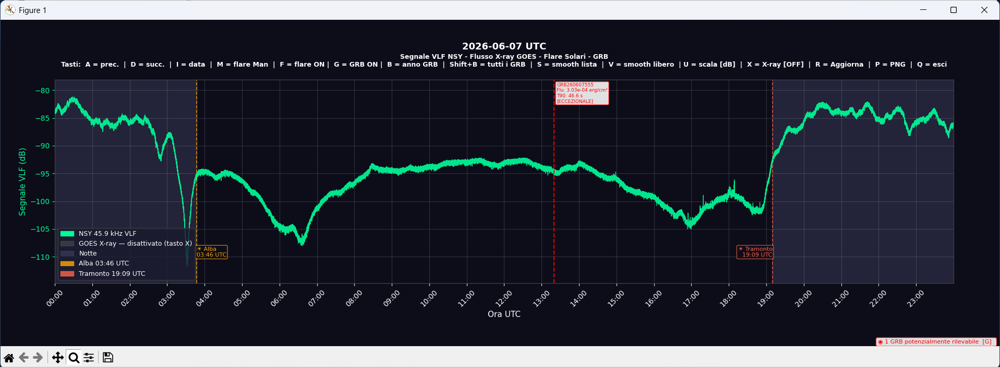
Grafico del 7 giugno 2026: il GRB260607555 (fluenza 3,03×10⁻⁴ erg/cm², T90 46,6 s, categoria ECCEZIONALE) viene marcato con una linea verticale tratteggiata rossa e un'annotazione che riporta nome, fluenza, durata e categoria. In basso a destra la status bar segnala in rosso la presenza di 1 GRB potenzialmente rilevabile; premendo il tasto G i marker vengono attivati o disattivati senza ricaricare i dati.
Chart for 7 June 2026: GRB260607555 (fluence 3.03×10⁻⁴ erg/cm², T90 46.6 s, category EXCEPTIONAL) is marked with a red dashed vertical line and an annotation showing name, fluence, duration, and category. The status bar at the bottom right signals in red the presence of 1 potentially detectable GRB; pressing key G toggles the markers on or off without reloading the data.
Validazione statistica: analisi a filtro adattato
Statistical validation: matched-filter analysis
Il modulo integrato nello script di visualizzazione si limita a segnalare, tramite catalogo, quali GRB soddisfano i criteri di fluenza e geometria del percorso. Per verificare rigorosamente se un evento specifico abbia effettivamente lasciato una firma statisticamente significativa nel segnale VLF è in sviluppo uno strumento dedicato, Analisi_GRB_v9_1.py ↓, basato su un approccio a filtro adattato (matched filter).
Lo script recupera la curva di luce reale del GRB dal catalogo Fermi GBM e la converte in un template atteso di ionizzazione del layer D tramite convoluzione con un modello di ricombinazione ionosferica esponenziale (τ ≈ 40 s). Il template viene poi confrontato con il segnale VLF osservato in una finestra di ±10 minuti attorno al trigger tramite cross-correlazione normalizzata.
La significatività del coefficiente massimo ottenuto è valutata rispetto a una distribuzione nulla empirica, costruita da numerose finestre di controllo estratte nella stessa fascia oraria del GRB su più giorni adiacenti (per tenere conto della variabilità diurna naturale della ionosfera), escludendo un raggio di sicurezza attorno all'evento reale. La soglia di rilevazione è fissata a p < 0,01. Due controlli aggiuntivi riducono il rischio di falsi positivi: un test di inversione temporale del template (un'anomalia realmente causata dal GRB non dovrebbe essere simmetrica nel tempo) e un vincolo sul ritardo fisico massimo (60 s) tra il trigger gamma e la risposta VLF osservata.
Il primo caso di test utilizzato per validare la pipeline è GRB260607555 (fluenza 3,03×10⁻⁴ erg/cm², categoria ECCEZIONALE), lo stesso evento del 7 giugno 2026 mostrato nell'immagine sopra.
The module built into the visualisation script only flags, via catalogue lookup, which GRBs meet the fluence and path-geometry criteria. To rigorously check whether a specific event actually left a statistically significant signature in the VLF signal, a dedicated tool is under development, Analisi_GRB_v9_1.py ↓, based on a matched-filter approach.
The script retrieves the GRB's real light curve from the Fermi GBM catalogue and converts it into an expected D-layer ionisation template by convolving it with an exponential ionospheric recombination model (τ ≈ 40 s). The template is then compared with the observed VLF signal in a ±10-minute window around the trigger via normalised cross-correlation.
The significance of the resulting maximum coefficient is assessed against an empirical null distribution, built from many control windows extracted in the same time-of-day band as the GRB across several adjacent days (to account for the ionosphere's natural diurnal variability), excluding a safety radius around the real event. The detection threshold is set at p < 0.01. Two additional checks reduce the risk of false positives: a time-reversal test of the template (an anomaly genuinely caused by the GRB should not be symmetric in time) and a constraint on the maximum physical lag (60 s) between the gamma-ray trigger and the observed VLF response.
The first test case used to validate the pipeline is GRB260607555 (fluence 3.03×10⁻⁴ erg/cm², EXCEPTIONAL category), the same event of 7 June 2026 shown in the image above.
Analisi visuale e quantitativa degli eventi GRB
Visual and quantitative analysis of GRB events
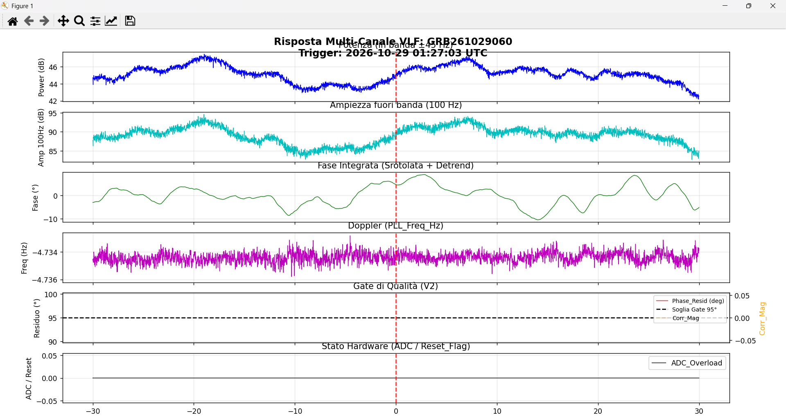
Esempio di utilizzo di Visualizza_GRB_Canali.py per il GRB261029060. Lo script mostra la risposta del segnale VLF su tutti i canali disponibili (Potenza, Ampiezza 100Hz, Fase Integrata, Doppler, Gate di Qualità e Stato Hardware) in una finestra di ±30 secondi attorno al trigger gamma. Questo permette di verificare visivamente se l'evento cosmico ha prodotto una perturbazione coerente su tutta la catena di misura.
Example of using Visualizza_GRB_Canali.py for GRB261029060. The script shows the VLF signal response across all available channels (Power, 100Hz Amplitude, Integrated Phase, Doppler, Quality Gate, and Hardware State) in a ±30-second window around the gamma trigger. This allows visually verifying if the cosmic event produced a coherent perturbation across the entire measurement chain.
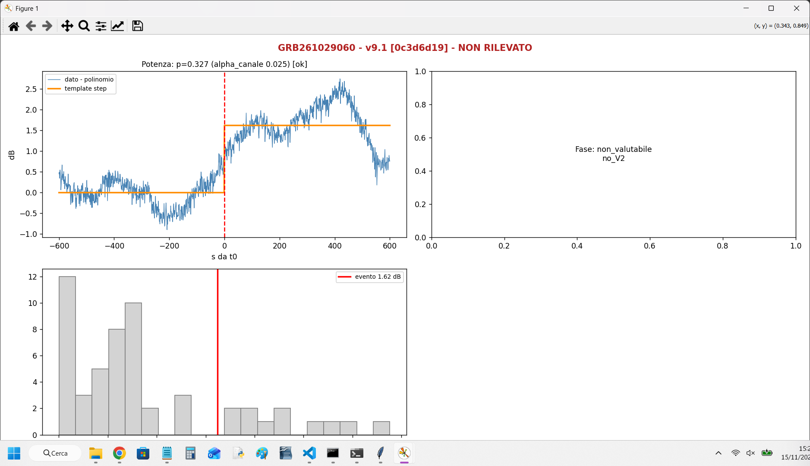
Output dello script Analisi_GRB_v9_1.py. Viene applicato un filtro adattato (template a gradino) per valutare statisticamente se la variazione di potenza (pannello in alto) è significativa rispetto al rumore di fondo. Nell'esempio, il verdetto è NON RILEVATO (p=0.327), il che significa che il piccolo bump osservato (1.62 dB) non è distinguibile in modo statisticamente robusto dalle fluttuazioni naturali del segnale.
Output of the Analisi_GRB_v9_1.py script. A matched filter (step template) is applied to statistically evaluate whether the power variation (top panel) is significant compared to the background noise. In the example, the verdict is NOT DETECTED (p=0.327), meaning that the small observed bump (1.62 dB) is not distinguishable in a statistically robust way from the natural signal fluctuations.